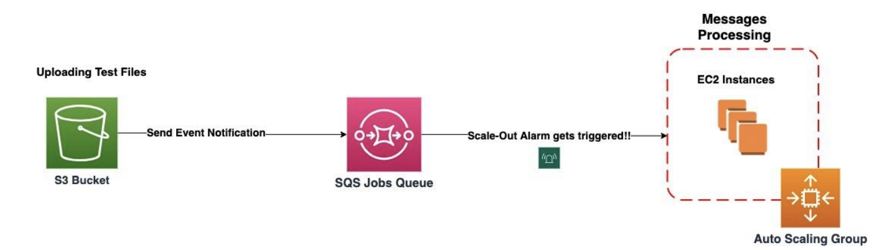
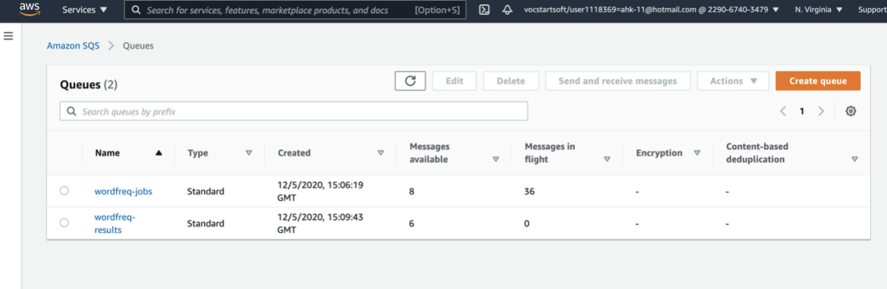
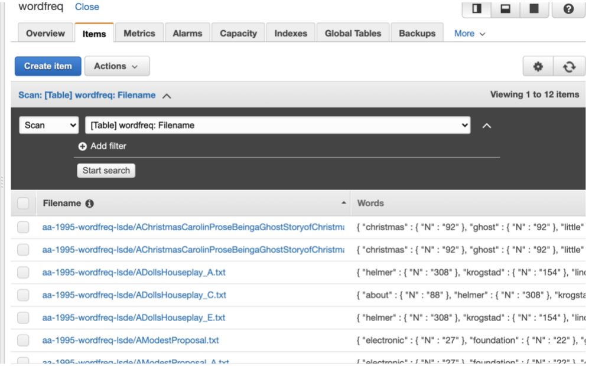
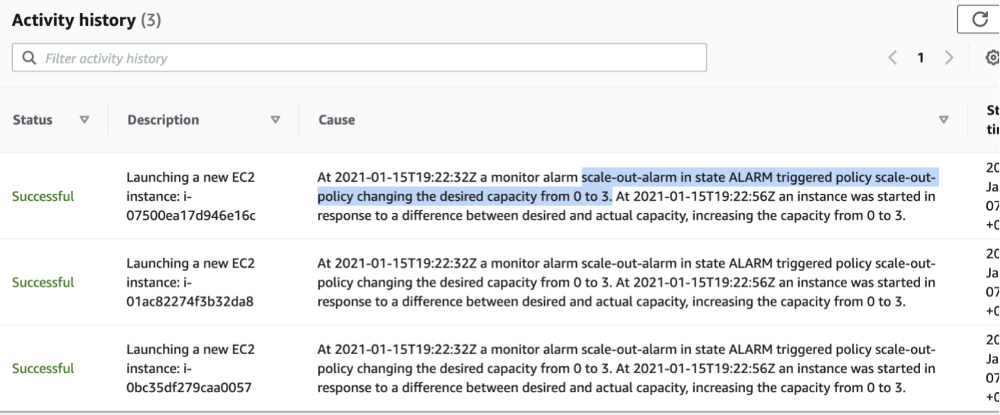
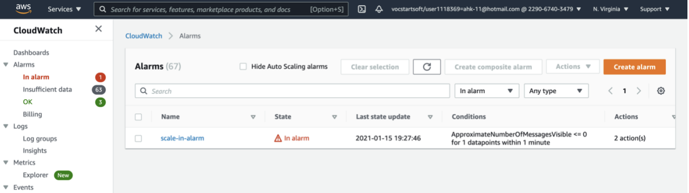
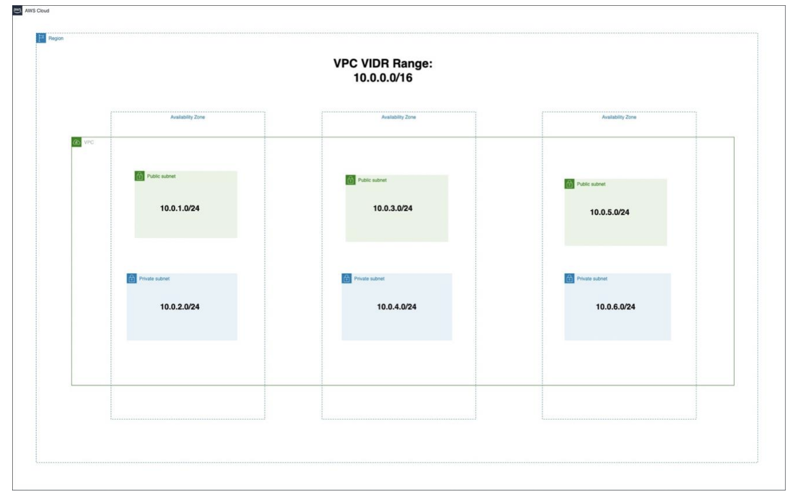
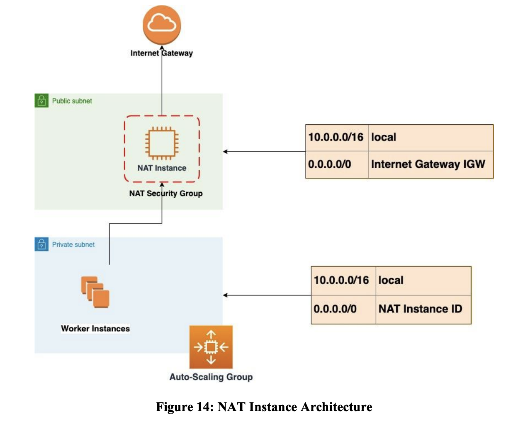
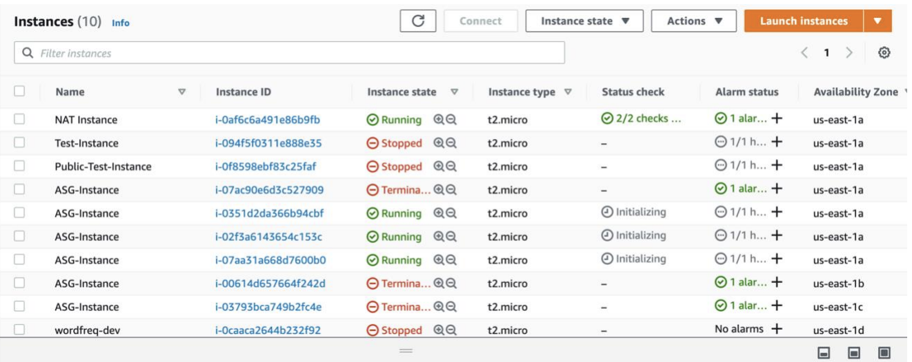
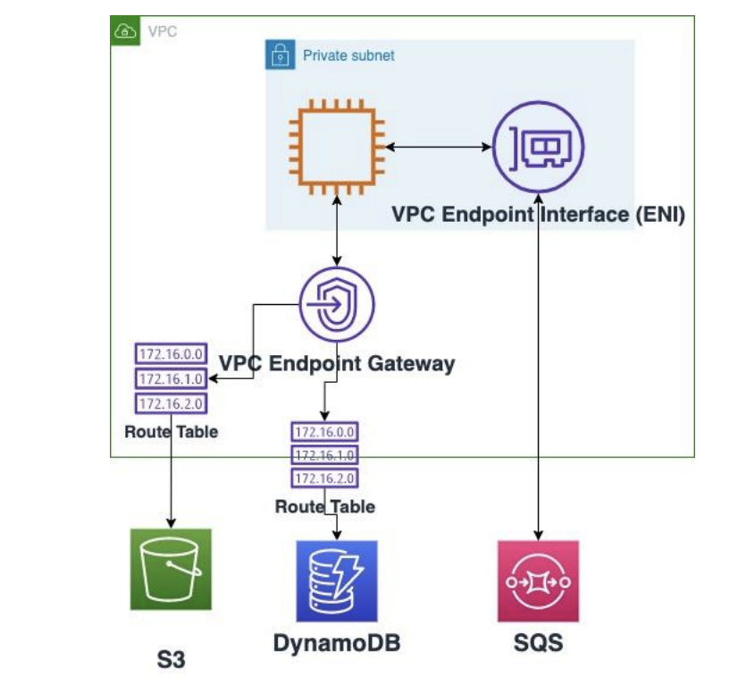

Large-Scale Data Engineering (LSDE) Coursework
In this unit coursework, I have done the following tasks:
Task 1: A written task related to the knowledge gained in the AWS Academy Cloud Foundations course which was part of the unit curriculum to debate the statement: "Data is not safe on the Public Cloud".
Read Sample:
Task 2: A combined practical and written activity architecting a scaling application on AWS Cloud.
Application Overview
WordFreq is a complete application designed using the Go programming language. Counting words in a text file is the basic feature of the programme. The top ten most common words in the document are returned. It has been migrated to AWS cloud using four main services connected with each other. The application runs on a virtual server (EC2 instance). Files are uploaded to AWS cloud via Amazon Simple Storage Service (Amazon S3). When the files are uploaded successfully to S3 bucket, an alert is sent to the job queue on Simple Queue Service (SQS) where the application processes the available messages. Another results queue holds the top ten results of the processed jobs. Eventually, all the output results are loaded into a NoSQL database table (DynamoDB).
Auto-Scaling Design Architecture
The purpose of Auto-Scaling architecture is to allow the application to scale up and down to meet demand. So, at this stage my goal was to support the application to handle greater loads. I did this by trying to vertically scale the application. For example, increasing the size of the instance from t2.micro to t2.large. Also, horizontally scaling by increasing the number of instances for the WordFreq application. When setting up the auto-scaling architecture for the WordFreq application, first I created Cloudwatch alarms attached to scaling policies in the autoscaling group. The alarms' purpose is to be triggered once a threshold is breached to take the action of launching worker instances specified in the scaling policy. The scaling depends on the SQS jobs queue because that is where the messages are picked up by the consumer and get processed. The process here begins with uploading test files to S3 bucket, then, an eventnotification sends an alert to the jobs queue indicating that there are available messages ready to be processed.
I have specified the threshold that if the average number of visible messages on the jobs queue is equal to or more than three messages for one data point within a minute, the scale-out alarm will be triggered to launch three servers for processing, and if there are no more messages remaining on the jobs queue, the scale-in alarm will be activated to leave no instances running for cost saving.
Screenshots of some of the work I did






